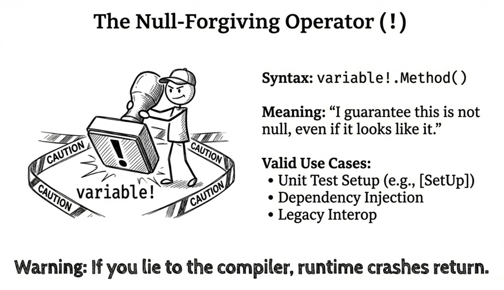

Chapter 3: Null safety
Tony Hoare—the inventor of the null reference—once called it “the Billion Dollar Mistake.” A decision that seemed harmless at the time ended up causing many crashes and security issues, and it made some bugs painfully hard to diagnose. Programming can feel like walking through a minefield: you never know which line will trigger a NullReferenceException because of an unexpected null.
Since its earliest versions, C# has steadily evolved its approach to handling nulls: C# 2.0 brought nullable value types (T?), later releases added null-related operators (??, ?.), and C# 8 introduced Nullable Reference Types (NRT). Each step makes nullability more explicit, more traceable, and easier for the compiler to check.
This chapter walks through modern C# null safety so you can reduce NullReferenceException incidents and move more null handling from “debug it later” to “catch it earlier.”
3.1 Why do we need null safety?
In earlier versions of C#, reference-type variables could be null by default:
This leads to a few predictable problems:
- High cost:
NullReferenceExceptionhas been one of the most common causes of .NET application crashes for years. - Hard to catch early: The compiler can’t detect these issues at compile time; they only surface at runtime.
- Hard to trace: In large projects,
nullcan appear anywhere along a complex call chain.
Early approaches
Before Nullable<T>, handling “missing values” (such as database columns) was awkward. Developers often used magic numbers to represent “no data,” such as:
This is error-prone and makes code harder to understand and maintain.
3.2 Nullable value types
C# 2.0 introduced nullable value types, implemented as the generic System.Nullable<T>, so value types can represent a “no value” state.
Think of Nullable<T> as a gift box:
- It might contain a value (there is a value).
- Or it might be empty (
null).

Syntax: the concise T?
You can write Nullable<int>, but C# provides cleaner syntactic sugar:
In modern C# code, prefer the T? form.
Assigning and reading values
You can assign values normally, but you must be careful when reading the value:
Reminder: always check for null (or HasValue) before using .Value; otherwise, you’ll get an InvalidOperationException.
Under the hood: Nullable<T>
Understanding the internal structure helps explain its behavior. Nullable<T> is a small struct with two fields. Conceptually, it looks like this (simplified):
There are three points to keep in mind:
int?uses a bit more memory thanintbecause it must store an extra “has value” flag.HasValuemakes the intent “does this have a value?” explicit, so it often reads more clearly than!= null.- Assigning
nulleffectively setshasValue = false.
Checking whether it has a value
This is one of the most common operations:
Both are fine. HasValue often reads a bit more clearly.
Converting to and from non-nullable types
Converting a value type to its nullable counterpart is implicit (and safe). The reverse operation requires an explicit cast because it introduces the risk of failure:
An explicit conversion tells the compiler: “I know what I’m doing”—and you accept the responsibility for the runtime risk.
Arithmetic with nullable values
In an arithmetic expression, if one operand is null, the result is null. In practice, this behavior is often called null propagation:
This matches intuition: if one of the operands is unknown (null), the overall result is naturally unknown as well.
In the C# language specification, this capability is implemented under the hood via lifted operators. A “lifted” operator means the compiler automatically expands an operator that normally works on a value type (like int) so it can also work with the corresponding nullable type (like int?).
Thanks to this mechanism, you can directly mix nullable and non-nullable operands:
Even if one operand (n) is a regular non-nullable type, the overall result of the expression is still nullable. This preserves type consistency and saves you from writing tedious casts in everyday expressions.
Source code: DemoNullableValueType
Ask AI
Explain the results of the following C# code, focusing on null propagation. Then rewrite it to avoid unnecessary nullable conversions, and compare performance:
Also: in data-processing pipelines, does frequent use of
Nullable<T>have meaningful performance overhead?
3.3 Null operators: Making null handling concise
To keep code both concise and safe, C# provides several operators specifically designed for null handling:
- Null-coalescing operator (
??): Provides a fallback value and prevents nulls from flowing downstream. - Null-coalescing assignment (
??=): Simplifies lazy initialization and “assign default if null” patterns. - Null-conditional operators (
?.and?[]): Safely access members or indexers even when the target might be null. - Null-conditional assignment (C# 14): Assigns only when the receiver is not null.
Null-coalescing operator (??)
The null-coalescing operator is ??. Its meaning is: “if the left operand is not null, use it; otherwise use the right operand.”
It’s essentially Plan B: if Plan A is null, fall back to Plan B.

Example:
In this example, the fallback value 5 is an int, so the result of the expression cannot be null. This is equivalent to:
int y = (x != null) ? x.Value : 5;Practical examples:
Null-coalescing assignment operator (??=)
Starting with C# 8, you can use the null-coalescing assignment operator ??=. It means: “if the left operand is null, assign the right operand to it.”
Code like this:
This can be reduced to a single line:
fontName ??= "Times New Roman"; // Assign only if fontName is nullCommon use: lazy initialization
Example:
This means LoadFromDatabase() is called and its result assigned only when _cache is null. If _cache already has a value, we return it directly. This is a common pattern for lazy initialization.
Null-conditional operators (?. and ?[])
The null-conditional operators are ?. and ?[]. Use ?. to access a member (a property or method) only if the receiver isn’t null; otherwise, the entire expression evaluates to null. You use ?[] similarly for indexers.

Start with ?.. The following example calls obj.ToString() directly:
If the caller passes null for obj, you’ll get a NullReferenceException. Rewrite it like this:
Line 3 is equivalent to:
return (obj == null ? null : obj.ToString());With indexers: ?[]
To access an indexer safely, use ?[]:
This means: if str is null, return null; otherwise try to return the first character.
Important: ?[] only checks whether the receiver is null. It does not check whether the index is in range. So if str is an empty string "", str?[0] will still throw an IndexOutOfRangeException. If you want to treat both null and empty strings as “no character,” add a length check or use string.IsNullOrEmpty.
Chaining (short-circuit behavior)
Null-conditional chaining is also safe, for example:
There are two points to notice:
- If
objis null, the expression evaluates to null immediately, regardless of how many member accesses follow. This behavior is known as short-circuiting. - Here we also use
?.on the result ofToString(), because in projects with NRT enabled, if the receiver’s compile-time type isobject, the compiler treatsobject.ToString()as possibly returningnull. Writing it this way avoids unnecessary null warnings.
For multi-level member access, ?. lets you chain the null checks through each level. For example:
int? orderCount = customer?.Orders?.Count;Even if customer or Orders is null, the program does not throw; it returns null.
Without ?., you have to expand each null check:
Reminder: in these examples, the variables that receive the result are nullable (int?, char?). That’s required because the result can be null.
Combining operators
Null-coalescing and null-conditional operators are often used together:
If the caller passes null, this method returns “N/A”.
Note that the return type is string, not string?. The pattern of “accepting nullable inputs but guaranteeing a non-null result” is very practical: callers can use the return value without extra null checks.
Note: the compiler can only distinguish
stringfromstring?and provide null-safety warnings when NRT is enabled. See Section 3.4.
Other common combinations:
When you need a fallback for multi-level nullable values, this style keeps safe access and defaulting in the same expression.
Null-conditional assignment operator (C# 14)
C# 14 extends ?. and ?[] so they can appear on the left-hand side of an assignment. This gives you a concise way to express “assign only if the receiver isn’t null.”
Previously, you had to do a null check first:
Now you can write:
// C# 14: null-conditional assignment
customer?.Order = GetCurrentOrder();This means: “Assign the result of GetCurrentOrder() to customer.Order only when customer is not null.”
Important detail: the expression on the right side is evaluated only if the left side is not null. If customer is null, GetCurrentOrder() is not called.
This also works with compound assignments:
Note: The -- and ++ operators (whether prefix or postfix) cannot be used with null-conditional assignment. This is because ++ and -- not only assign a new value but also produce a result. If customer is null, the language would have to define what the entire expression should return. To avoid that ambiguity, C# does not allow this syntax.
Source code: DemoNullOperators
3.4 Nullable reference types
The T? syntax we discussed earlier is primarily about value types, but in practice reference types are the main source of NullReferenceException. C# 8.0 introduced Nullable Reference Types (NRT) so the compiler can catch potential null-reference bugs at compile time. This is one of the most important safety features in modern C#.

Enabling the nullable context
For backward compatibility, older .NET projects often had NRT disabled by default. Starting with .NET 6, new project templates enable NRT by default, but whether it is enabled still depends on project settings. To enable or disable it explicitly, set the Nullable property in your .csproj:
You can also enable it for a single file with a pragma directive:
#nullable enableFile-level control is useful when migrating a legacy codebase gradually instead of fixing everything at once.
Core concepts: ? and ! annotations
With NRT enabled, the semantics of reference types change fundamentally:
The ? explicitly tells the compiler “this variable may be null.” Without ?, the compiler treats it as “should not be null.”
Note
If NRT is not enabled,
stringstill behaves like it did in older C#: null is allowed by default. In that state, even if you writestring?, the compiler usually treats it as an annotation only, and you may even see warnings such as CS8632 telling you that nullable annotations are not currently enabled, rather than fully tracking and enforcing nullability under NRT rules. With NRT enabled,stringis treated as non-nullable, and you usestring?to explicitly represent “may be null.” This change encourages you to handle nulls intentionally.
Non-nullable reference types
For non-nullable declarations, the compiler treats them as safe to use under the current nullability contract and flow-analysis result:
Keep in mind that “safe” here means the compiler does not issue a nullability warning based on the information it currently has. It does not mean runtime nulls are impossible. If an external API, legacy code path, or third-party library violates its contract, you can still get a runtime failure.
Nullable reference types
For nullable declarations, the compiler warns you and requires a null check:
To eliminate the warning, check first:
Compiler flow analysis
The compiler performs static flow analysis to track the null state of variables. It recognizes common guard patterns:
It also understands is pattern checks:
More complex logic is supported as well:
However, flow analysis has limits. It can’t “see through” code like this:
Flow analysis has an important limitation: without extra nullability contract information, it usually reasons only from the visible control flow and its built-in rules.
So even though ValidateName throws an exception on null, the compiler does not know that. When it checks the later name.Length access, it still cannot prove that name is non-null, so it reports a warning.
In cases like this, you can use the [NotNull] attribute to help the compiler understand:
This tells the compiler that the method ensures the argument is not null, allowing it to reason correctly and suppress the warning.
Ask AI
When migrating a legacy project, I enabled Nullable Reference Types and ran into null warnings I can’t eliminate. For the following scenarios, should I use the
!operator, or is there a better refactoring approach?
- A private field is initialized in a private method called by the constructor, but the compiler can’t track it.
- A unit test framework initializes the test subject in a
[SetUp]method.- Dependencies are injected by an external DI container and marked as required.
When is
null!reasonable, and when should I refactor instead?
Null-forgiving operator (!)
Sometimes the compiler can’t prove a value is non-null, even when you know it’s safe. In such cases, you can use the ! operator to tell the compiler: “I guarantee this isn’t null—don’t warn me.”
Example:
The key point is that some legacy APIs or third-party libraries may expose a string? signature even though, under a specific contract or call path, you know the value is guaranteed to be non-null. That is the kind of situation where ! can be reasonable.
A word of caution: don’t use ! merely to silence warnings. Doing so pushes a risk the compiler could have flagged back into runtime behavior. Use ! only when you are genuinely certain.

Common scenarios where ! can be useful:
(1) Delayed initialization the compiler can’t track
While null! can be a reasonable stopgap in this kind of scenario, [MemberNotNull] is often a better way to tell the compiler that the field is guaranteed to be initialized here. For example, the previous sample can be rewritten like this:
using System.Diagnostics.CodeAnalysis;
public class MyClass
{
private string _value; // Use an attribute instead of ! to describe the initialization guarantee
public MyClass()
{
Initialize();
}
public string Value => _value;
[MemberNotNull(nameof(_value))]
private void Initialize()
{
_value = "Initial value";
}
}Applying [MemberNotNull] to Initialize tells the compiler: if this method completes successfully, _value can be treated as initialized and no longer needs to be considered null.
Tip
Starting from C# 11, if a public property must be supplied by the caller during object creation, consider using the
requiredmodifier instead (see Chapter 4). However, this example shows a private field initialized inside the class’s construction flow, which is not the main use case forrequired.
(2) Framework-provided property injection (Blazor as an example)
Some frameworks support property injection, but the exact behavior depends on the framework. The example above uses a Blazor component: the framework sets the property value at runtime, but the compiler cannot infer that from the code alone, so = null!; is commonly used here.
In ordinary application services, constructor injection is still the preferred approach. In other words, you receive dependencies through the constructor, which usually avoids the need for this kind of null!.
(3) Test setup code
Note that a test framework mechanism such as [SetUp] usually guarantees only that the initialization method runs before the test. It does not guarantee that CreateTestSubject() itself returns a non-null value.
If CreateTestSubject is not supposed to return null in the first place, the better fix is usually to declare its return type as non-nullable. Using ! here makes sense mainly when you’re constrained by legacy code, test tooling, or an existing helper signature and you know that this particular call won’t return null.
Ask AI
Prompt: “Is it reasonable and appropriate to use the null-forgiving operator in the foreach statement in the following code? Why?”
When you try this prompt, a well-reasoned AI response should confirm that, in this specific example, using ! is appropriate, and explain:
- If
await allTasksthrows and execution enters thecatchblock, it usually means that an asynchronous operation failed, or that it was cancelled partway through. - However, in this example,
ThrowAsync(...)is deliberately designed to throw, so the focus is on failure rather than cancellation. - Under that assumption,
allTasks.Exceptionhas a value, so using!tells the compiler: “I know this value is not null here.”
Here is another prompt for practicing a related skill: writing correct null annotations for common patterns:
I’m maintaining a utility library and need correct null annotations for these common patterns:
- TryParse-style methods (the
outvalue is non-null on success; not guaranteed on failure)- Lazy-initialized properties (created on first access)
- Conditional initialization methods (set only under certain conditions)
Rewrite the signatures using attributes like
[NotNullWhen],[MaybeNull], and[NotNull], and explain how those annotations help callers.
Real-world example: API design
When designing APIs, correct null annotations save callers from guessing. A quick glance at the method signature should tell callers what may be null:
#nullable enable
public class UserService
{
// Return value is non-null
public User GetUser(int id)
{
var user = FindUserInDatabase(id);
return user ?? throw new UserNotFoundException(id);
}
// Return value may be null
public User? FindUser(string email)
{
return FindUserByEmail(email); // Might not exist
}
// Parameters are non-null
public void UpdateName(User user, string name)
{
// Under the current nullable contract,
// the compiler can treat user and name as non-null
user.Name = name;
}
// Parameter may be null
public void UpdateNickname(User user, string? nickname)
{
user.Nickname = nickname; // nickname is allowed to be null
}
}Source code: DemoNullableReferenceType
Compatibility with legacy code
NRT is a compile-time feature; it doesn’t change runtime behavior. That means:
- Existing code won’t stop running just because you turned on NRT.
- Even with NRT warnings, the project can still build and run (unless you treat warnings as errors, covered later).
- You can adopt NRT incrementally instead of fixing everything immediately.
Suggested approach:
- For new projects, use the default (project-level NRT enabled).
- For older projects, start by enabling
#nullable enablein individual files and migrate step by step.
Separating annotation and warning contexts (advanced)
#nullable enable actually does two things:
- Annotation context: Treat reference types as non-nullable unless they’re annotated with
?. - Warning context: Produce null-safety warnings.
You can control them separately. For example, enable only one of them in a file:
#nullable enable annotations // Enable annotations only (no warnings)Or:
#nullable enable warnings // Enable warnings only (doesn't change annotations)You can also enable both (equivalent to #nullable enable):
You can do the same at the project level:
Practical use: when migrating a large legacy codebase, you might start with annotation context only:
This gives downstream consumers clear nullability contracts right away, while you fix internal warnings gradually.
Treating null warnings as errors
For new projects, it’s often a good idea to promote null warnings to errors:
Common null-related warning codes include:
- CS8600: Converting a null literal or possible null value to a non-nullable type
- CS8602: Dereference of a possibly null reference
- CS8603: Possible null reference return
Ask AI
Fix all CS86xx warnings in this .NET project. The project was upgraded from an older .NET version and has never had NRT enabled. Please first judge the actual intent of the code: only mark a type as nullable (
T?) whennullis truly a valid value. If a value should not be null, prefer fixing the initialization flow, adding guard clauses, applying appropriate nullability attributes, or refactoring the code to eliminate the warning. Use!only as a last resort when you have strong reasons to know the compiler cannot infer the guarantee.After each
.csfile change, pause. I will review, rebuild, and check whether the warning count decreases. Only continue when I tell you to.
3.5 Pattern matching and null
Pattern matching is a major C# feature; see Chapter 6 for a full discussion. This section focuses on using pattern matching for null checks.

is null and is not null (C# 9+)
Using pattern matching for null checks is often clearer and safer than == null:
Here,
is nullhas been available since C# 7.0, whileis not nullwas introduced in C# 9.0 together with thenotpattern.
The is form is preferable because:
- It reads clearly (almost like English)
- It’s not affected by overloaded
==(safer)
Switch expressions and null
This section uses switch expressions. If you’re not familiar with them, see Chapter 6 or learn from the example below.
Switch expressions make null handling flow naturally alongside other logic:
This integrates null handling into your branching logic, avoiding extra if checks and keeping the code compact.
Property patterns and null
Property patterns let you put null checks and property conditions in the same pattern:
This handles multiple levels of null checking automatically, without the need to chain ?. manually. The compiler ensures the if block runs only when all intermediate objects are non-null.
Source code: DemoNullPatternMatching
Ask AI: compare null-checking styles
Use this prompt to ask an AI to compare readability, performance, and safety:
Here are three ways to write the same logic. Compare them in readability, performance, and null safety:
// 1. Traditional if/else if (customer != null && customer.Orders != null && customer.Orders.Count > 0) { ProcessVipOrder(customer); } // 2. Null-conditional operator + null-coalescing if (customer?.Orders?.Count is > 0) { ProcessVipOrder(customer); } // 3. Property pattern if (customer is { Orders.Count: > 0 }) { ProcessVipOrder(customer); }In large-scale applications, do complex property patterns have meaningful performance costs?
3.6 Best practices
This section summarizes some best practices. These guidelines help you write safer, more maintainable code.
1. Prefer explicit nullability in your API
2. Check early to prevent null from spreading
// ✗ Null spreads through the entire method
public void ProcessOrder(Order? order)
{
var items = order?.Items; // items may be null
var count = items?.Count; // count may be null
// ...now the whole method has to deal with null
}
// ✓ Guard clause / early return
public void ProcessOrder(Order? order)
{
if (order is null) return;
// Everything below can assume order is not null
var items = order.Items;
var count = items.Count;
}This guard-clause pattern keeps the method body concise and makes the preconditions clear at a glance.
3. Use nullability attributes (advanced)
For cases that aren’t fully expressible through NRT annotations alone, you can use attributes to provide extra information, such as [NotNull], [MaybeNull], and [NotNullWhen]:
With [NotNullWhen(true)], the compiler understands that when the method returns true, the out parameter is definitely not null.
4. Combine modern syntax thoughtfully
Combining the null-conditional operator, null-coalescing operator, and pattern matching can produce code that’s both compact and safe:
This line handles multiple levels of null checks and fallback logic. If it feels too dense, ask an AI to explain it; if it is inconvenient to debug, split it into steps:
AI collaboration: detect null risks
When maintaining legacy projects, you can ask an AI to surface potential null risks.
Prompt
Analyze this project’s code and identify places that might throw NullReferenceException. Suggest guard clauses using modern C# pattern matching or null-conditional operators, and recommend enabling Nullable Reference Types.
Summary
- Nullable value types (
T?): Let value types represent “no value.” - Null operators (
??,??=,?.,?[]): Simplify null-handling logic and make code safer. C# 14 further extends this with null-conditional assignment. - Nullable Reference Types (C# 8+): Detect many null bugs at compile time.
- Pattern matching:
is null,is not null, and switch expressions make null checks clearer and safer. - Best practices: Annotate explicitly, guard early, and combine modern syntax carefully to keep
NullReferenceExceptionout of your code.
In the next chapter, we’ll look at immutability and how it supports safer, more maintainable designs.
Glossary
| Term | Description |
|---|---|
| Guard clause | An early check at the start of a method to validate inputs and return/throw quickly. |
| Null | A special value representing “no object” / “no reference.” |
| Null-coalescing assignment operator | ??=; assigns only when the left-hand side is null. |
| Null-coalescing operator | ??; provides a fallback value when the left-hand side is null. |
| Null-conditional operator | ?. and ?[]; access members/indexers safely when the receiver might be null. |
| Null-forgiving operator | !; tells the compiler “treat this as non-null,” suppressing nullability warnings. |
| Nullable reference type (NRT) | C# 8+ feature that lets the compiler analyze and warn about possible null dereferences. |
| Nullable value type | A value type that can represent no value via T? (Nullable<T>). |
| Null propagation | A behavior where an expression becomes null when a null value participates in the computation. |
| NullReferenceException | The runtime exception thrown when dereferencing a null reference. |
| Pattern matching | C# syntax for matching shapes/conditions; useful for clear and safe null checks. |